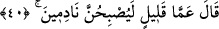
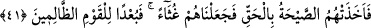

yalanlamalarına karşılık” yâni beni yalanlamaları ve bunda ısrar etmeleri sebebiyle
onlara karşı: “Bana yardımcı ol!” benim için onlardan intikam al. Ey Rabbim! Galibiyet
vererek bana yardım et ve onları mağlup et. “dedi.”
40. Allah şöyle buyurdu: Pek yakında onlar mutlaka pişman olacaklar!
“Allah” Teâlâ onun duâsına icâbet ederek ve kabûlünü de vaadederek “şöyle
buyurdu: Pek yakında” yâni az zamanda “onlar” yalanlayan kâfirler, inkâr ve
yalanlamalarına “mutlaka pişman olacaklar!” Bu ise azâbı gördüklerinde olacaktır.
41. Nitekim, vukuu kaçınılmaz olan korkunç bir ses yakalayıverdi onları!
Kendilerini hemen sel süprüntüsüne çevirdik. Zalimler topluluğunun canı
cehenneme!
“Nitekim, vukuu kaçınılmaz olan” sâbit bir şekilde karşı konulması mümkün
olmayan; Celâleyn’de belirtildiği üzere Allah’tan bir emir ile “korkunç bir ses” Cibrîl
(a.s.)’ın sesi “yakalayıverdi onları!” Onların üzerine öyle korkunç bir sayha attı ki
ondan dolayı kalbleri parçalandı ve öldüler.
“
” sesi yükseltmektir.
Eğer “Bu (onları korkunç bir sesin yakalaması), kıssanın başında zikredilen “
(nesil)”den maksadın Sâlih (a.s.)’ın kavmi Semûd olduğuna delâlet eder. Çünkü Âd
kavmi kasıp kavuran bir rüzgarla helak edildi.” dersen, şöyle cevap veririm: Daha önce
geçtiği üzere Lût kavminin altüst edilmekle ve korkunç sesle helâk edildikleri gibi belki
de onlar kasıp kavuran rüzgar kendilerine isâbet ettiği zaman onun içinde korkunç bir
sese de mâruz kaldılar.
Rivayet edilir ki, Âd oğlu Şeddad, İrem’in inşâsını tamamlayınca âilesi ile oraya
yürüdü. Oraya yaklaşınca Allah onların üzerine gökten bir sayha gönderdi ve helâk
oldular.
“Sayha”nın azâbın kendisi ve ölüm demek olduğu da söylenmiştir.
Celâleyn’de: “Onları azab sayhası/sesi yakaladı.” denir.
“Kendilerini hemen” kendisinden istifâde edilemeyen “sel süprüntüsüne çevirdik.”
Sel süprüntüsü, selin üstünde taşıdığı köpük, yaprak ve çerçöp gibi şeylerdir.
Râğıb der ki: “Bu ifâde, değer verilmeksizin zâyi olan ve giden şey hakkında darb-ı
mesel olarak kullanılır.” Allah onları harap olmaları konusunda gözden kaybolan,